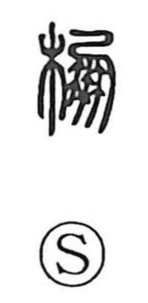

棚

Uncategorized
Kun: tana | On: hou
shelf ・ rack
Explanation
A phono-semantic character: the wood element signals a wooden object or structure, while 朋 functions as the phonetic, indicating the On reading hou. Early glosses evoke timber constructions: the Shuowen defines it as zhan, a plank road or bridge that juts from a cliff like a shelf, and the Cang Jie Pian describes roofed galleries and pavilions. From such wooden walkways and halls, the meaning settled on the household shelf (tana).